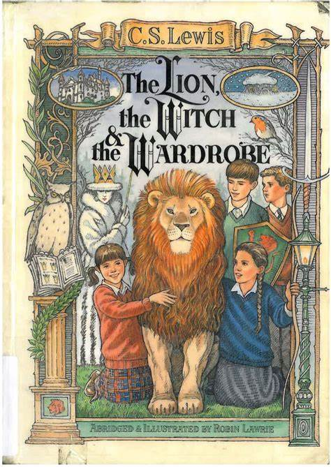

The Chronicles of Narnia: The Lion, the Witch and the Wardrobe (A Narnia Krónikái: Az oroszlán, a boszorkány és a ruhásszekrény)
Író: C.S. Lewis Kiadás: 1950
C.S. Lewis klasszikus regénye, melyben négy testvér egy varázslatos világba, Narniába kerül, ahol egy gonosz boszorkány uralma alatt álló birodalom és az erőteljes Aslan, az oroszlán közötti küzdelmet élhetjük át. Lewis lenyűgözően mesél, és a történet mélyebb rétegeiben morális és filozófiai témákat feszeget, miközben elkalauzol minket a varázslatos Narnia birodalmába.
C.S. Lewis

Foglalkozása: Író Született: 1898-1963
C.S. Lewis, teljes nevén Clive Staples Lewis, angol író, irodalomkritikus és egyetemi tanár volt. Lewis a 20. század egyik legkiemelkedőbb irodalmi alakja, és leginkább a Narnia Krónikák című gyerekkönyvsorozatával vált ismertté. Ő írta továbbá népszerű apologetikus műveket és irodalomkritikai esszéket.C.S. Lewis 1898. november 29-én született Belfastban, Észak-Írorságban, és 1963. november 22-én halt meg.